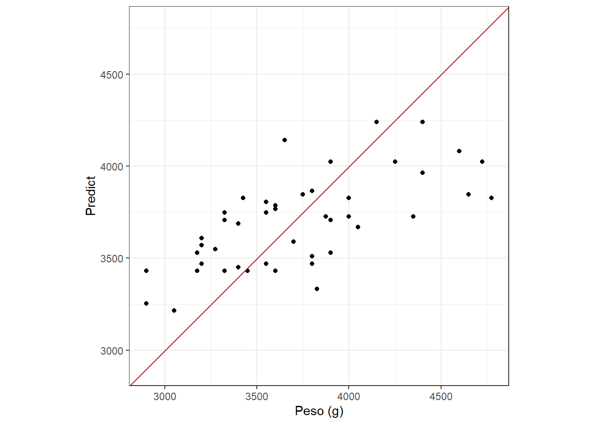

pacman::p_load(tidymodels)Introdução
Compreender o que os dados estão nos dizendo é de suma importancia para ciencia, para isso realizamos diveros processos de investigação inicial. Após essa etapa Ao analisarmos bases de dados com muitas colunas e linhas, torna-se essencial dominar ferramentas que facilitem o manejo,
O tidymodels é composto por diversos pacotes sendo os principais
rsample - Promove realizar processo random substs (Bootstrap) recipe - Contem funções de transformação de data para modelos (Feature enginnering)
parsip - Pacote que cntem diversos modelos que serão utilizados Tune e dias - Fine-tuningn e melhorar o modelo
yardstick package - provem metricas para entender o modelos
- Podemos ter mdelos
Regressao - Modelos nmericos quatitativos classificação - categorial ( sim ou não)
#Processo
treino e teste
Treino - feature engineering Model fiting e tunning
Teste
Performa em um data nunca visto
pinguins <- palmerpenguins::penguins
pinguins <- pinguins %>%
filter(species == "Adelie") %>%
na.omit()
pinguin_splite<- initial_split(data = pinguins,
prop = 0.7,
strata = body_mass_g)
pinguin_train <- pinguin_splite %>%
training()
pinguin_test <- pinguin_splite %>%
testing()Vamos ver modelos simples, sendo assim iremos começar com modelos de regressão, para isso iremos analisar utilizaremos o pacote yardstick() para ajustar modelos e analisar a predição.
Como exemplo iremos predizir o peso em g dos pinguins em relação a tamanho do bico
formula basica
y = b + ax
O sistema de parsnip se estrutura em 3 etapas
1 - Especificar o tipo de modelo
2 - Especificar a engine
3 - Especificar o modo
linear_model <- linear_reg() %>%
set_engine(engine = "lm") %>%
set_mode(mode = "regression")Após criar nosso modelo, precisamos treinalo com nossos dados, sendo assim realizamos processo de fit.
lm_fit <- linear_model %>%
fit(body_mass_g ~ bill_depth_mm,
data = pinguin_train)Após criar o modelo, podemos investigar o resumo do modelo em sistema tibble.
tidy(lm_fit)# A tibble: 2 × 5
term estimate std.error statistic p.value
<chr> <dbl> <dbl> <dbl> <dbl>
1 (Intercept) 75.6 599. 0.126 0.900
2 bill_depth_mm 197. 32.6 6.05 0.0000000270A patir do modelo criado podemos
peso_pred <- lm_fit %>%
predict(new_data = pinguin_test)
peso_pred# A tibble: 46 × 1
.pred
<dbl>
1 3510.
2 4142.
3 4241.
4 3589.
5 3708.
6 3688.
7 3767.
8 3866.
9 3471.
10 3747.
# ℹ 36 more rowsPara observar a avaliação podemos utilizar o bind_cols
peso_test_results <- pinguin_test %>%
select(body_mass_g,bill_depth_mm) %>%
bind_cols(peso_pred)
peso_test_results# A tibble: 46 × 3
body_mass_g bill_depth_mm .pred
<int> <dbl> <dbl>
1 3800 17.4 3510.
2 3650 20.6 4142.
3 4400 21.1 4241.
4 3700 17.8 3589.
5 3325 18.4 3708.
6 3400 18.3 3688.
7 3600 18.7 3767.
8 3800 19.2 3866.
9 3800 17.2 3471.
10 3550 18.6 3747.
# ℹ 36 more rows##Evoluindo performece do modelos
rmse
peso_test_results %>%
rmse(truth = body_mass_g, estimate = .pred)# A tibble: 1 × 3
.metric .estimator .estimate
<chr> <chr> <dbl>
1 rmse standard 362.peso_test_results %>%
rsq(truth = body_mass_g, estimate = .pred)# A tibble: 1 × 3
.metric .estimator .estimate
<chr> <chr> <dbl>
1 rsq standard 0.468ggplot(peso_test_results, aes(x = body_mass_g,
y = .pred))+
geom_point() +
geom_abline(color = "red", linetyper = 2)+
labs(x = "Peso (g)", y = "Predict") +
coord_obs_pred()+
theme_bw()Warning in geom_abline(color = "red", linetyper = 2): Ignoring unknown
parameters: `linetyper`
FINal
Last fit função
lm_last_fit <- linear_model %>%
last_fit(body_mass_g ~ bill_depth_mm,
split = pinguin_splite)
lm_last_fit %>% collect_metrics()# A tibble: 2 × 4
.metric .estimator .estimate .config
<chr> <chr> <dbl> <chr>
1 rmse standard 362. pre0_mod0_post0
2 rsq standard 0.468 pre0_mod0_post0lm_collect_predictions <- lm_last_fit %>% collect_predictions()
Características do pacote dplyr
- Rename: Renomear coluna
- Slice: Selecionar linhas
- Select: Comparação sistemática de algoritmos
- Filter: Análise de diferentes propriedades do solo
- Relocate: Modificar a coluna
- Arrange: Organizar os dados de forma sequêncial
- Summarise: Realizar métricas com os dados
- pivot longer: Manipulação dos dados
Referências
- Wickham et al. (2019). Welcome to the tidyverse. JOSS.
- Horst et al. (2020). palmerpenguins.